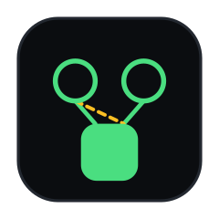

Is what we decided still true?
Memory isn’t the hard part.
Assumptions are.
A decision is a belief held under premises about the world — and the world moves.
Nobody stores the given. WhyLog does.
Premises are shared nodes. Cascade is exact — not a force-directed guess.
Nothing contradicted me. I never said the word database. The world moved, and the log noticed.
The system proposes. You dispose. The agent reads the stamp.
Memory tools stop you repeating yourself. WhyLog stops you building on a decision that stopped being true.